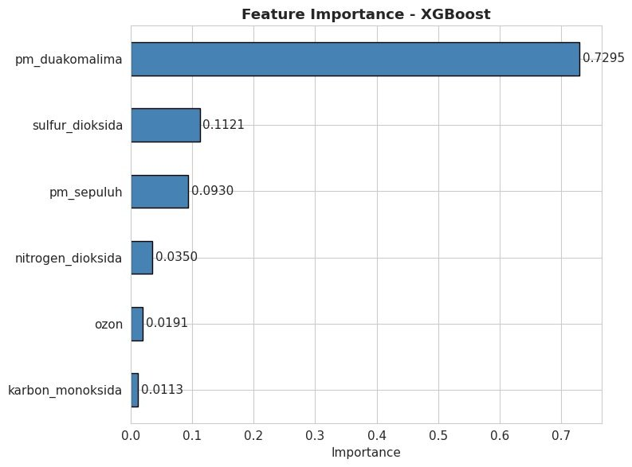

In 700 days of readings, Jakarta had 14 days of good air.
I'm Reinaldy, a data analyst and 2026 Computer Science graduate from BINUS University. That chart comes from the data behind my thesis. The rest of this site is the work I've done since, in retail, e-commerce, banking and healthcare, each taken from a business question to a recommendation.
Thesis
JakU: classifying Jakarta's air quality with machine learning
We compared Random Forest, XGBoost and SVM on official ISPU readings using CRISP-DM, then built a Streamlit dashboard with a User-Centered Design process so residents can check the air and simulate predictions.
- 97.71%
- test accuracy with XGBoost
- 0.9634
- macro F1 on imbalanced classes
- 53 of 53
- Unhealthy days caught in the test set
- 78.28
- usability score (SUS), benchmark is 68

Projects
Seven analyses from the RevoU Full Stack Data Analytics program, newest first. Each one opens with the finding, then shows the method, the files and the slides.
-
Every loan on an account that had been overdrawn in the prior year went bad. Two screens the bank can run before approval bring the problematic loan rate from 11.1% to 5.0%.
Read the case study -
Self-pay patients are 13% of admissions but hold 30% of all pending revenue. The backlog is spread across all eight branches, so the fix has to be a network policy.
Read the case study -
744 cardholders, 38% of the base, made no transaction in six months. Only one of the two dormant groups has the debt headroom to be worth reactivating.
Read the case study -
Every category reaches roughly the same 97,000 to 98,700 customers, so revenue follows how much each customer buys. The top four categories bring in about 44% of revenue.
Read the case study -
Five behavioural and financial variables explain 92.7% of how much a customer spends in a year. Age stops mattering once the others are in the model.
Read the case study -
All three campaigns returned about Rp55 of revenue per Rp1 of discount, so a bigger budget bought a bigger result, not a better one. The new product page lifted average order value by 11%.
Read the case study -
Sales rose 20.4% but Corporate profit fell 13.6%. Furniture is the only category losing ground, down 56.6%, and discounts are the fastest lever to fix it.
Read the case study
About
I studied Computer Science at BINUS University, specializing in Data Analytics, where I developed skills in descriptive, diagnostic, predictive, and prescriptive analytics. I also spent a year as a System Analyst Intern before moving further into data. This combination shapes how I work. I start by understanding who needs the answer and what they will do with it, then use data to uncover insights and support better decisions.
I am interested in Data Analysis, Business Intelligence, Business Analysis, System Analysis, and related fields.
- 2026RevoU, Full Stack Data AnalyticsBusiness problem framing, statistics, SQL, Python, Tableau and a capstone project.
- 2026BINUS University, S.Kom in Computer ScienceThesis on machine learning classification of Jakarta's air quality.
- Feb 2025 to Feb 2026System Analyst Intern, PT Pratama Solusi TeknologiRequirements (BRD, SRS, PRD), UML, UAT and sentiment analysis of Play Store reviews for a regional public service app.
Skills
- Data Analysis
- Data Cleaning, Exploratory Data Analysis, Statistical Analysis, Regression Analysis, Hypothesis Testing, Customer Segmentation (RFM), Sentiment Analysis, and Business Problem Solving
- Programming & Database
- Python (Pandas, Scikit-learn, Matplotlib, Plotly), SQL (BigQuery, DuckDB)
- Machine Learning
- Classification, Clustering, XGBoost, Random Forest, Support Vector Machine, K-Nearest Neighbour, Decision Tree, and K-Means
- BI & Visualization
- Tableau, Streamlit, Microsoft Excel, and Google Sheets
- Requirements & Documentation
- BRD, SRS, PRD, Use Case, UML, ERD, Flowchart, User Manual, and System Analysis Report
- Testing
- Functional Testing, Cross-device QA Testing, User Acceptance Testing (UAT), and Bug Documentation
- Technical Tools
- Google Colab, Visual Studio Code, Git/GitHub, JASP, Figma, Draw.io, Node.js, and Jupyter Notebook
- Methodologies & Frameworks
- CRISP-DM, Rapid Application Development (RAD), Agile, Waterfall, User-Centered Design, DARCI, Issue Tree, SUS, and OBIPR
- Soft Skills
- Analytical Thinking, Problem Solving, Communication, Teamwork, and Attention to Detail
- Language
- Indonesian (Native) and English (Professional Working Proficiency)